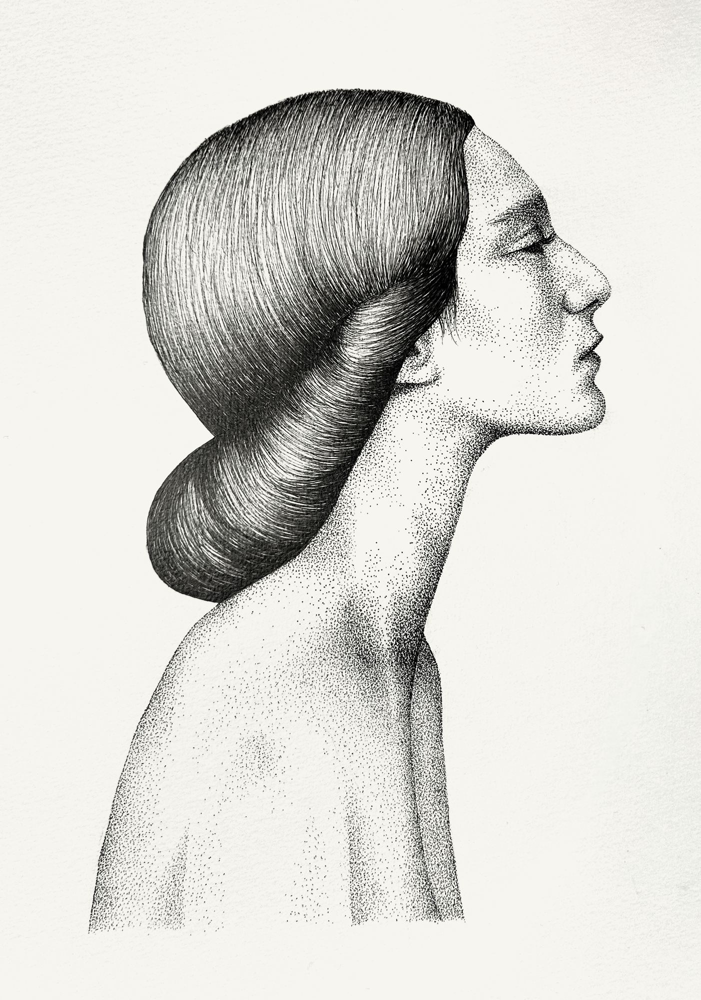
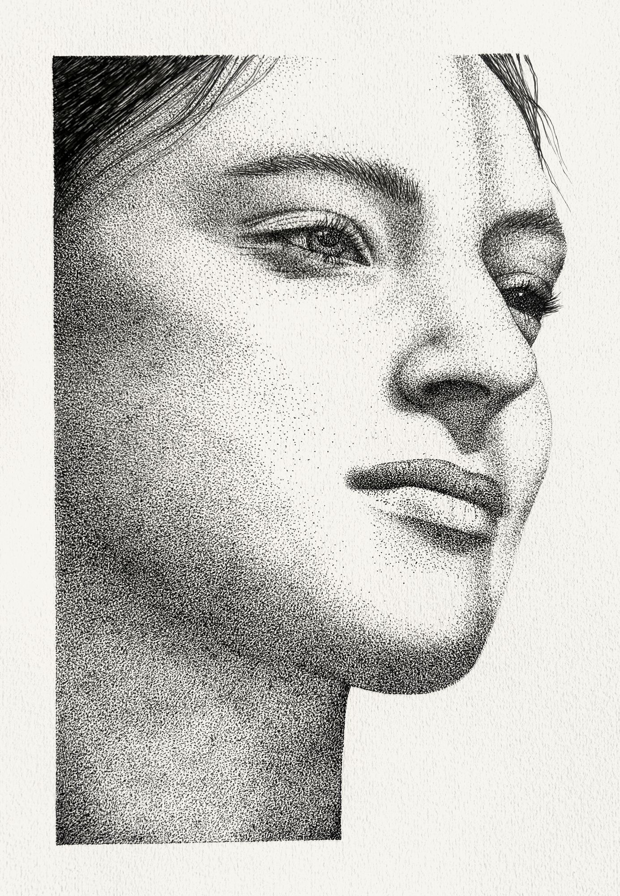
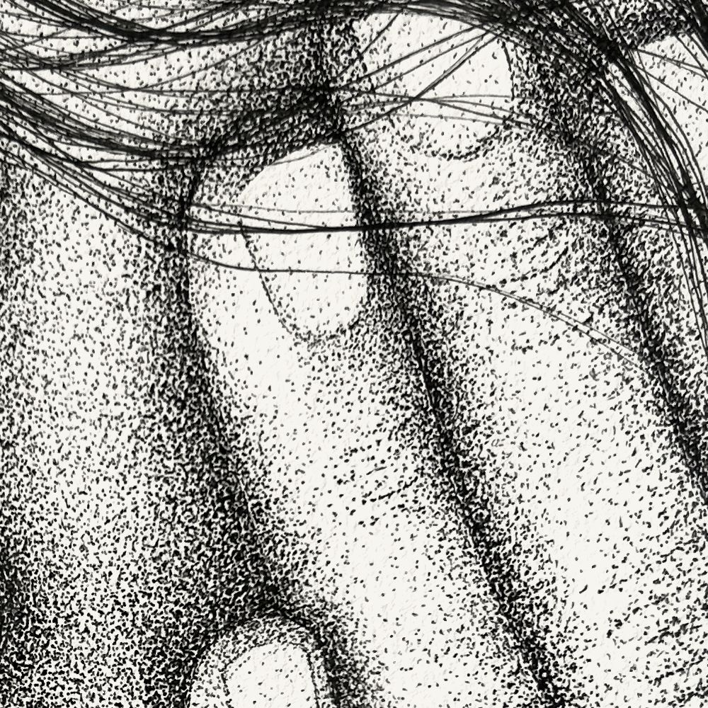
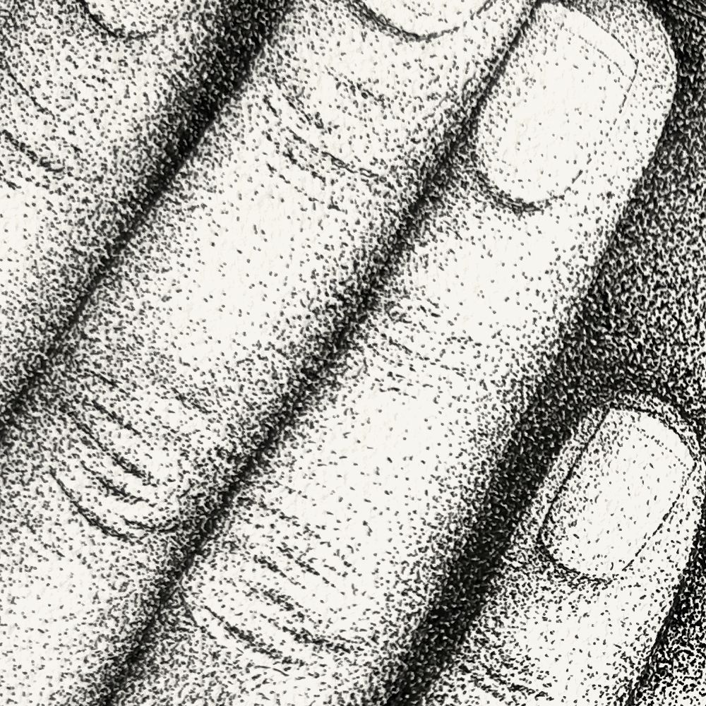

Sarah Lauren
The art of looking closer.
Original artwork, considered craftsmanship and creative collaborations.
View the workNº 01 Black pigment ink on paper, 17 × 20 cm Move across the drawing to look closer Tap the drawing to look closer
Original artwork.Distinctive applications.Considered collaborations.
Art
Selected work
Each drawing is made by hand in black pigment ink. Select any image to view it large, then again to see the marks at full size.
Look
closer.


Objects In development
Art beyond
the page.
Exploring the translation of original artwork into silk, textiles and collectible objects.
Nothing is available yet. Ask to be told when the first pieces are released.
Collaborations
Original artwork and distinctive creative concepts for fashion, beauty, fragrance, interiors and lifestyle.
From bespoke illustration and textile applications to product collaborations, licensing and limited-edition collections, each project begins with an individual artistic perspective.
Concept studies
Independent explorations of how the drawings might live off the page. These are speculative studies, not commissioned projects or products for sale.



Portfolio
The art of looking closer.
Illustration
Sarah Lauren
Begin a conversation
Atelier
Thousands of marks, placed one at a time.
Stippling builds an image from single points of ink. There is no blending and no wash. A shadow is simply more dots, set closer together.
Each drawing begins as a faint outline. Tone is then built slowly across the paper, and fine line is reserved for the places that need it, such as hair.
- Pen
- 0.05 mm fine line
- Ink
- Black pigment ink
- Paper
- 300 gsm
- Method
- Stipple and fine line, by hand


About
Sarah Lauren is an independent artist in Aotearoa New Zealand who draws in black ink, one mark at a time.
She trained in fashion design, graduating with honours, and brings that attention to line, proportion and material to portraiture and botanical form.
The practice centres on original artwork and extends, through selected collaborations, into textiles, objects and commercial projects.